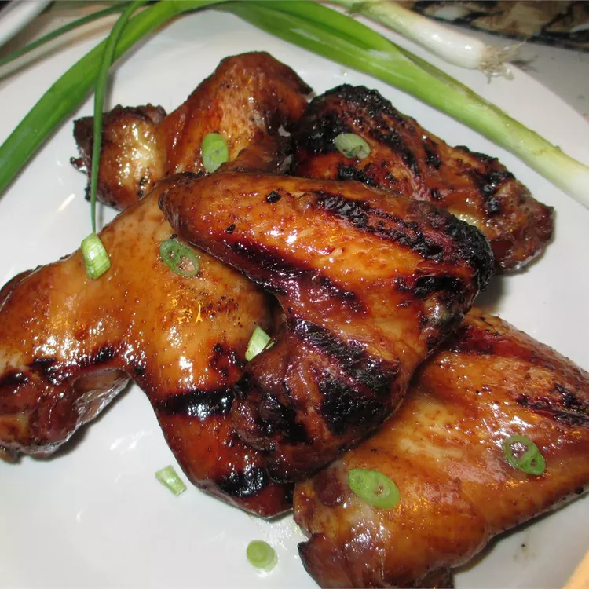

Chinese Chicken Wing

Ingredients
- 2 cups soy sauce
- 2 cups brown sugar
- 2 tablespoons garlic powder
- 5 pounds chicken wings, split and tips discarded
Steps
- Stir together soy sauce, brown sugar, and garlic powder in a saucepan over medium heat. Cook and stir until sugar has dissolved. Remove from heat and allow to cool.
- Place chicken wings in a large bowl. Pour soy sauce mixture over wings and toss to coat evenly. Cover the bowl with plastic wrap. Allow chicken to marinate in the refrigerator for 8 hours to overnight.
- Preheat the oven to 350 degrees F (175 degrees C).
- Pour chicken wings and marinade into a 9x13-inch baking dish. Cover the baking dish with aluminum foil.
- Bake in the preheated oven until thoroughly hot, about 45 minutes. Remove foil and bake for 15 more minutes. Serve hot.